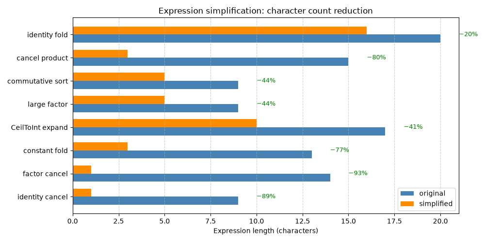

Note
Go to the end to download the full example code.
Symbolic expressions for dimensions#
ONNX models frequently use symbolic tensor shapes: instead of a concrete
integer such as 128, a dimension carries a name like "batch" or
"seq_length". During shape inference and graph optimisation it is
necessary to compare, simplify, evaluate, and rename those symbolic
expressions.
onnx_light.onnx_core.expressions exposes a pure-Python API backed
by a fast C++ AST engine. This example walks through the main entry points:
simplify_expression()— fold constants and cancel common symbolic factors.simplify_two_expressions()— compare two expressions by computing their difference.compare_expressions()— tell whether one expression is greater, equal, smaller or unknown relative to another (assuming all tokens are positive or null).evaluate_expression()— evaluate a symbolic expression given a concrete variable assignment.parse_expression_tokens()— extract the set of variable names used in an expression.rename_expression()andrename_dynamic_expression()— substitute variable names.dim_add,dim_sub,dim_mul,dim_div,dim_mod,dim_max,dim_min— arithmetic on dimensions that may be either concrete integers or symbolic strings.dim_ranges_from_expressions()— infer tight[lower, upper]ranges for each dimension variable from a set of equality constraints.
from __future__ import annotations
from onnx_light.onnx_core.expressions import (
INFINITY,
DimRange,
compare_expressions,
dim_add,
dim_div,
dim_max,
dim_min,
dim_mod,
dim_mul,
dim_multi_mul,
dim_ranges_from_expressions,
dim_sub,
evaluate_expression,
parse_expression_tokens,
rename_dynamic_expression,
rename_expression,
simplify_expression,
simplify_two_expressions,
)
Simplifying expressions#
simplify_expression() accepts either an integer (returned as-is) or
a string expression. It applies a pipeline of AST transformations
including identity folding, common-factor cancellation, constant folding,
and commutative reordering. When the result is a pure integer it is
returned as int; otherwise a simplified string is returned.
# Integer input is returned unchanged.
print(simplify_expression(42))
# Symbolic cancellation: ``a + b - a`` → ``"b"``.
print(simplify_expression("a + b - a"))
# Multi-step simplification: ``2 * batch // batch`` → ``2`` (int).
result = simplify_expression("2*batch//batch")
print(result, type(result))
# Constant folding: ``5 + x - 2 + 3`` → ``"x+6"``.
print(simplify_expression("5 + x - 2 + 3"))
# ``CeilToInt(b+c, 2)`` is expanded to ``(b + c + 1) // 2``.
print(simplify_expression("CeilToInt(b+c, 2)"))
# Common-factor cancellation in a longer chain.
print(simplify_expression("1024*a//2"))
# Commutative reordering ensures a canonical form.
print(simplify_expression("c + b + a"))
42
b
2 <class 'int'>
x+6
(1+b+c)//2
512*a
a+b+c
Comparing two expressions#
simplify_two_expressions() computes the difference
expr1 - expr2 as a linear combination and returns the map of
non-zero variable coefficients. An empty dict means the two
expressions are equal under linear arithmetic.
difference coefficients: {'s70': -1, 'seq_length': 1}
equal expressions: {}
compare_expressions() goes one step further: assuming every token is
positive or null, it reports whether the first expression is
Greater,
Equal,
Smaller or
Unknown compared to
the second. The returned
ExpressionComparison exposes the
result and the simplified difference expr2 - expr1.
compare a+1 to a: CompareResult.Greater -1
compare a to b: CompareResult.Unknown b-a
Evaluating with concrete values#
evaluate_expression() takes an expression string and a mapping
from variable names to int values, and returns the integer result.
print(evaluate_expression("x - y", {"x": 5, "y": 6}))
print(
evaluate_expression(
"batch * seq_length + offset", {"batch": 4, "seq_length": 128, "offset": 0}
)
)
print(evaluate_expression("CeilToInt(7, 2)", {}))
-1
512
4
Extracting variable names#
parse_expression_tokens() returns the set of symbolic variable
names (Name AST nodes) referenced in an expression. It returns
the original string inside a set when parsing fails, rather than
raising an exception.
print(sorted(parse_expression_tokens("a + b * c")))
print(sorted(parse_expression_tokens("2*batch//batch + seq_length")))
['a', 'b', 'c']
['batch', 'seq_length']
Renaming variables#
rename_expression() substitutes variable names according to a
mapping. It also normalises Max(a, b) calls to the a^b form
before renaming.
# Simple rename: ``s52`` → ``B``.
print(rename_expression("s52+seq_length", {"s52": "B"}))
# ``Max(s10, s3)`` is normalised to ``s10^s3`` and then renamed.
print(rename_expression("Max(s10, s3)", {"s10": "E", "s3": "D"}))
# :func:`rename_dynamic_expression` additionally applies a lightweight
# simplification pass after renaming.
replacements = {"s9": "cache_length", "seq_length": "seq_length"}
print(rename_dynamic_expression("s9+seq_length", replacements))
B+seq_length
E^D
cache_length+seq_length
Arithmetic on dimensions#
The dim_* helpers let code operate uniformly on dimensions that
may be either concrete integers or symbolic strings. When both
operands are integers the result is an integer; when at least one is
symbolic the result is a simplified expression string.
# Concrete integer arithmetic.
print(dim_add(3, 4))
print(dim_sub(10, 3))
print(dim_mul(3, 4))
print(dim_div(12, 4))
print(dim_mod(10, 3))
print(dim_max(7, 3))
print(dim_min(2, 9))
# Symbolic arithmetic.
print(dim_add("batch", 1))
print(dim_sub("n", "n"))
print(dim_mul("seq_length", 2))
print(dim_div("2*n", 2))
print(dim_max("a", "b"))
# :func:`dim_multi_mul` accepts any number of arguments.
print(dim_multi_mul(2, 3, 4))
print(dim_multi_mul(2, "n", 3))
7
7
12
3
1
7
2
batch+1
0
2*seq_length
n
a^b
24
6*n
Inferring dimension ranges from equality constraints#
dim_ranges_from_expressions() derives tight [lower, upper] ranges
for each dimension variable given a list of equality constraints between
symbolic dimension expressions, as arises when matching the shapes of two
ONNX inputs.
Supported pattern: var // d1 // d2 // ... // dn == value, which yields
var ∈ [value * P, value * P + P - 1] where P = d1 * d2 * ... * dn.
Both sides of each equality are tried; the result is a dict mapping each
variable name to a DimRange with inclusive lower and upper
bounds. When upper equals lower the variable is exactly constrained.
When no finite upper bound exists, upper is set to INFINITY.
# add(x[a,b], y[d//5,1]) → a == d//5
# a is exactly d//5; d ∈ [5*a, 4+5*a]
r = dim_ranges_from_expressions([("a", "d//5")])
print("a:", r["a"].lower, r["a"].upper) # exact: a == d//5
print("d:", r["d"].lower, r["d"].upper) # range: 5*a <= d <= 4+5*a
print("isinstance DimRange:", isinstance(r["a"], DimRange))
# Numeric equality: a == 3 → a is exactly 3
r2 = dim_ranges_from_expressions([("a", "3")])
print("a (numeric):", r2["a"].lower, r2["a"].upper)
# Double floor-division chain: a == d//10 → d ∈ [10*a, 9+10*a]
r3 = dim_ranges_from_expressions([("a", "d//10")])
print("d (d//10):", r3["d"].lower, r3["d"].upper)
# Variables without a recognised pattern are absent from the result.
r4 = dim_ranges_from_expressions([("x+y", "5")])
print("'x' in result:", "x" in r4)
# Filter to a subset of tokens.
r5 = dim_ranges_from_expressions([("a", "d//5")], tokens=["d"])
print("filtered to d:", r5["d"].lower, r5["d"].upper)
# The INFINITY sentinel marks an unbounded upper bound.
print("INFINITY:", INFINITY)
a: d//5 d//5
d: 5*a 5*a+4
isinstance DimRange: True
a (numeric): 3 3
d (d//10): 10*a 10*a+9
'x' in result: False
filtered to d: 5*a 5*a+4
INFINITY: +inf
End-to-end: deriving the output shape of a Reshape node#
As a practical illustration, consider a Reshape that flattens the
last two dimensions of a [batch, seq_length, heads, head_dim]
tensor. The output shape is [batch, seq_length, heads * head_dim].
The dim_* helpers let us compute this symbolically.
batch = "batch"
seq = "seq_length"
heads = "heads"
head_dim = 64 # concrete
last_dim = dim_mul(heads, head_dim)
print(f"last dimension: {last_dim!r}")
output_shape = [batch, seq, last_dim]
print("output shape:", output_shape)
# When we later learn the concrete value of ``heads`` we can evaluate.
concrete_last = evaluate_expression(str(last_dim), {"heads": 12})
print(f"concrete last dimension (heads=12): {concrete_last}")
last dimension: '64*heads'
output shape: ['batch', 'seq_length', '64*heads']
concrete last dimension (heads=12): 768
Plot — Expression simplification effectiveness#
The chart below visualizes how simplify_expression() reduces
expression complexity, measured by string length (a simple proxy for
AST size). Bars show the character count before and after simplification
for a set of representative expressions.
import matplotlib.pyplot as plt # noqa: E402
# Sample expressions: (original, description)
test_cases = [
("a + b - a", "identity cancel"),
("2*batch//batch", "factor cancel"),
("5 + x - 2 + 3", "constant fold"),
("CeilToInt(b+c, 2)", "CeilToInt expand"),
("1024*a//2", "large factor"),
("c + b + a", "commutative sort"),
("x*2 + y*3 - x*2", "cancel product"),
("batch*seq_length + 0", "identity fold"),
]
originals = []
simplified = []
labels = []
for expr, desc in test_cases:
result = simplify_expression(expr)
result_str = str(result) # Handle int results
originals.append(len(expr))
simplified.append(len(result_str))
labels.append(desc)
x = range(len(test_cases))
width = 0.35
fig, ax = plt.subplots(figsize=(10, 5))
bars_orig = ax.barh(
[i - width / 2 for i in x], originals, width, label="original", color="steelblue"
)
bars_simp = ax.barh(
[i + width / 2 for i in x], simplified, width, label="simplified", color="darkorange"
)
ax.set_yticks(x)
ax.set_yticklabels(labels)
ax.set_xlabel("Expression length (characters)")
ax.set_title("Expression simplification: character count reduction")
ax.legend()
ax.grid(axis="x", linestyle="--", alpha=0.6)
# Add reduction percentage annotations
for i, (orig, simp) in enumerate(zip(originals, simplified)):
reduction = 100 * (orig - simp) / orig if orig > 0 else 0
if reduction > 5: # Only annotate meaningful reductions
ax.text(
max(orig, simp) + 1, i, f"−{reduction:.0f}%", va="center", fontsize=9, color="green"
)
fig.tight_layout()
fig.savefig("plot_expressions.png")

Total running time of the script: (0 minutes 0.267 seconds)
Related examples
Gallery generated by Sphinx-Gallery
Example last updated
- Date:
2026-09-06